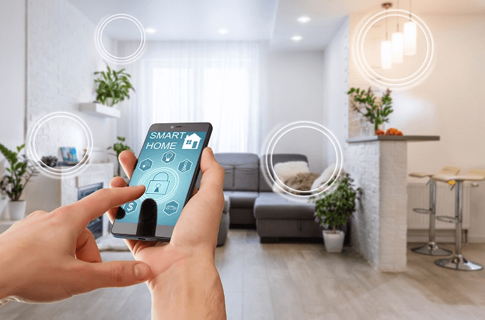
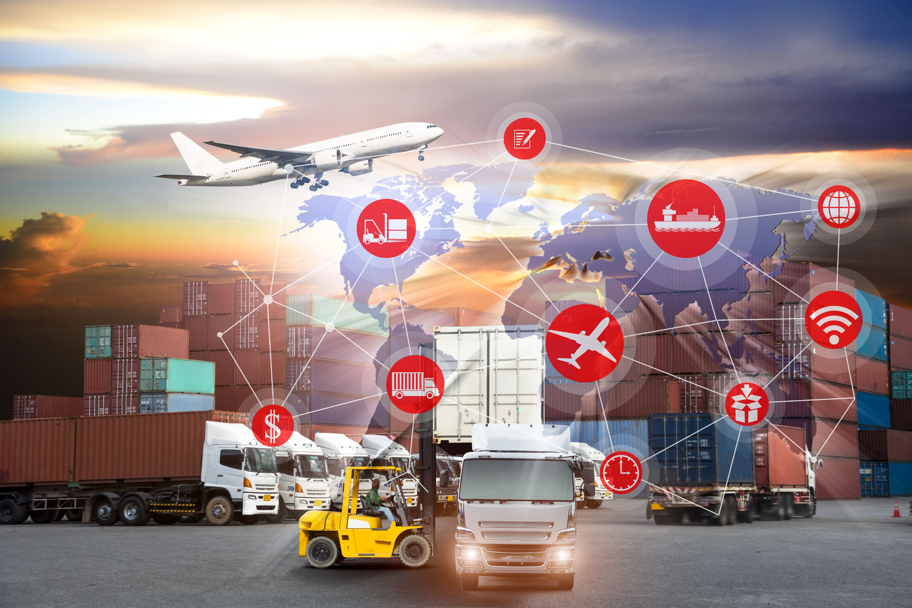
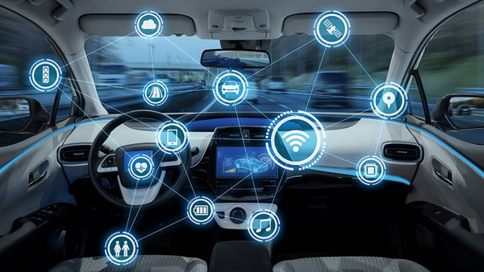

Hogares Inteligentes

Los dispositivos del IoT se pueden utilizar en el hogar para automatizar tareas y mejorar la eficiencia. Por ejemplo, puede utilizar un termostato habilitado para IoT para ajustar automáticamente la temperatura según su horario o el clima exterior. También puede utilizar un sistema de seguridad habilitado para IoT para monitorear su hogar en busca de intrusos o peligros ambientales.
Sistemas de transporte más seguros

Los dispositivos del IoT se pueden aplicar en el sector del transporte para aumentar la eficiencia y mejorar la seguridad. Por ejemplo, se pueden utilizar para rastrear la ubicación de los vehículos o para monitorear las condiciones del tráfico en tiempo real. También se pueden utilizar para controlar automáticamente los semáforos o para proporcionar información sobre los lugares de estacionamiento disponibles.
Ciudades inteligentes

La tecnología del IoT también se utiliza para desarrollar ciudades inteligentes, donde una variedad de servicios municipales se conectan y administran mediante computadoras. Estos incluyen la gestión de residuos, el uso de energía y el flujo de tráfico. Al conectar todos estos diferentes sistemas, es posible obtener una descripción general en tiempo real de lo que sucede en la ciudad y tomar decisiones en consecuencia.
Vehículos conectados

El término “auto conectado” se refiere a un vehículo que puede optimizar su propia operación, con mantenimiento y comodidades diseñadas para mejorar la experiencia de los pasajeros y conductores. Muchos fabricantes de automóviles destacados como Tesla, Jeep y BMW han desarrollado automóviles conectados. Otras empresas, como Apple y Google, están en proceso de desarrollar automóviles conectados para el público general.